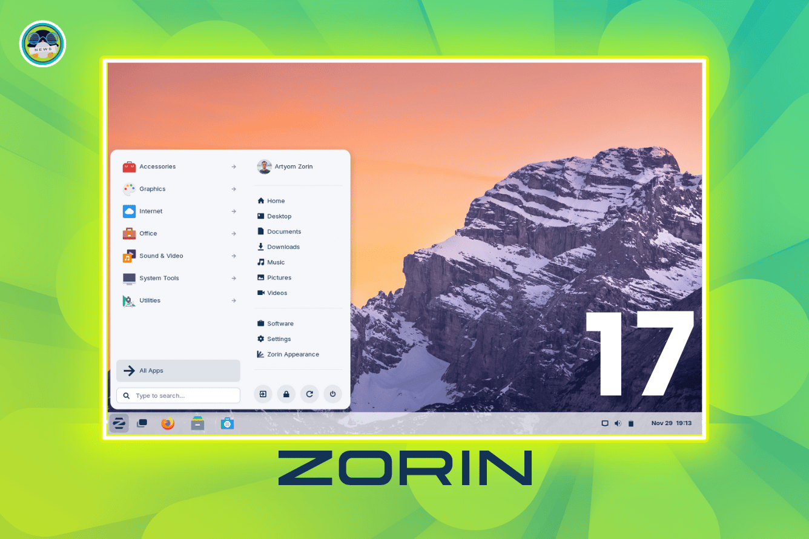

Présentation de la distribution
Zorin OS est une distribution Linux basée sur Ubuntu, conçue pour offrir une interface conviviale et accessible, notamment aux utilisateurs venant de Windows ou macOS.
Images de Zorin OS
Site officiel
Visitez le site officiel ici : zorin.com
Versions disponibles
- Zorin OS Core – Gratuit
- Zorin OS Lite – Gratuit, pour vieux PC
- Zorin OS Pro – Payant, avec plus d’options
Tableau comparatif des éditions
| Édition | Prix | Fonctionnalités |
|---|---|---|
| Core | Gratuit | Fonctions de base, interface moderne |
| Lite | Gratuit | Optimisé pour les anciens PC |
| Pro | 39€ | Plusieurs interfaces, logiciels pro inclus |